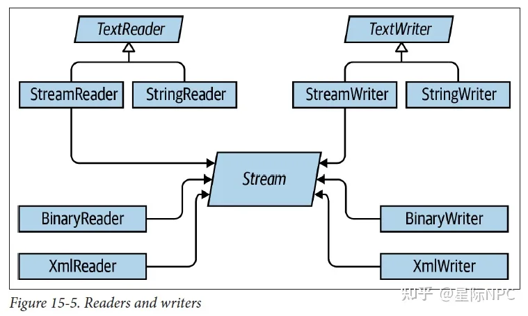

流体系结构 .NET流体系结构由三个概念组成：后端存储，装饰器以及适配器，如图1所示：
Stream类.NET中用于处理流的基类，Stream公开了一组用于读取、写入和定位的标准方法。与数组(数据同时存在于内存中)不同，流连续处理数据（一次一个字节或以可管理大小的块为单位）。因此，无论其后端存储的大小如何，流都可以使用少量的固定内存处理。
流分为两类：
后端存储流：它们是与特定的后台存储类型连接的流，例如FileStream或者NetworkStream
装饰流：这些流会使用其他的流，并以某种方式转换数据。例如DeflateStream或者CryptoStream。
后台存储是输入输出的终结点，例如文件或者网络连接。准确地说，它可以是以下的一种或者两种：
装饰流具有下列的体系结构优点：
将原来需要后端存储流自己实现例的功能(如压缩或是加密等)，剥离出来
当后端存储流被装饰后，后端存储流不再忍受接口变化的痛苦
我们在运行时连接到装饰器
我们可以将装饰器链接在一起
后端存储与装饰器流以字节为单位进行处理。尽管这比较灵活与高效，但是程序通常在更高的层次上进行文本或XML的处理，因此需要适配器，将流封装到一个具有特定方法的类中，来实现文本或xml的处理。例如，一个文本读取器公开了一个ReadLine方法；一个XML写入器公开了WriteAttributes方法。
总结起来就是，后端存储流提供了原始数据；装饰器流提供了透明的二进制转换，例如加密；适配器提供了类型方法来以更高级形式处理数据，例如字符串与XML。图1显示他们之间的关系。要形成一个链，我们只需要将一个对象传递给另一个对象的构造函数。
使用流 抽象的Stream类是所有流的基类。它的方法和属性定义了三种基本的操作：读、写、查找。除此之外，它还定义了一些管理性的任务，例如关闭、刷新（flush）和配置超时时间。
还有 Read 和 Write 方法的异步版本，它们都返回 Tasks 并可选择接受取消令牌。
读取与写入 流可以支持读取，写入或者两者都支持。如果CanWrite为true，则流支持写入；如果CanRead为true，则流支持读取。
Read方法支持从流中读取数据块并存入数组。他返回所读取的字节数，返回值总是小于或是等于count参数。
如果返回值小于count，则意味着或者是到达了流的结尾，或者是流以更小的块向我们提供数据（在网络流中经常如此）。以上任何一种情况下，数组中的字节余额将保持未写入状态，保留之前的值。
使用 Read，您可以确定仅当该方法返回 0 时您已到达流的末尾。因此，如果您有一个1,000字节的流，以下代码可能无法将其全部读入内存：
1 2 3 byte [] data = new byte [1000 ];s.Read (data, 0 , data.Length);
Read 方法可以读取 1 到 1,000 字节的任意位置，留下流的剩余部分未读。
下面是读取 1,000 字节流的正确方法：
1 2 3 4 5 6 7 8 9 10 11 byte [] data = new byte [1000 ];int bytesRead = 0 ;int chunkSize = 1 ;while (bytesRead < data.Length && chunkSize > 0 ) bytesRead += chunkSize = s.Read (data, bytesRead, data.Length - bytesRead);
幸运的是，BinaryReader 类型提供了一种更简单的方法来实现相同的结果：
1 byte [] data = new BinaryReader (s).ReadBytes (1000 );
如果流的长度小于 1,000 字节，则返回的字节数组反映实际的流大小。如果流是可搜索的，您可以通过将 1000 替换为 (int)s.Length 来读取其全部内容。
ReadByte 方法更简单：它只读取一个字节，返回 -1 以指示流的结尾。 ReadByte 实际上返回一个 int 而不是一个 byte，因为后者不能返回 −1。
Write 和 WriteByte 方法将数据发送到流。如果它们无法发送指定的字节，则会抛出异常。
注意，在Read与Write方法中，offset参数指读取或写在buffer数组中开始的索引，而不是流中的位置。
定位 如果CanSeek方法返回true，则流是可定位的。对于可定位的流（例如文件流），我们可以查询或是修改其Length（通过调用SetLenght），并且在任何时刻修改我们正在读取或是写入的Position。
Position属性是相对于流的起始处的；然而，Seek方法可以使得我们相对于当前位置或是文件的结束处进行移动。
注意，在FileStream上改变Position通常会花费几毫秒的时间。如果我们在一个循环中执行几百万次，框架4.0中新的MemoryMappedFile类是比FileStream更好的选择。
对于不可定位的流（例如加密流），确定其长度的唯一方法就是完全读取。而且，如果我们需要重新读取前面的一部分，我们必须关闭流并重新读取。
关闭与输出缓冲 流在使用之后必须销毁来释放底层资源，例如文件或是套接字句柄。保证关闭流的最简单方法是在using块中实例化流。通常，流遵循标准的销毁语义：
Dispose与Close在功能上是相同的
重复销毁或是关闭流不会引起错误
关闭一个装饰器流会同时关闭装饰器以及其后端存储流。对于一个装饰器链，关闭最外层的装饰器（位于链的头部）会关闭整个装饰器链。
某些流在内部会缓冲要写入后端存储的数据或是由后端存储读取的数据来减少读取的来回次数从而改进性能（文件流就是一个好例子）。这意味着我们要写入流的数据也许并没有立即写入后端存储；写入会被延迟直到缓冲区被填满。Flush方法会强制在内部缓冲的数据被立即写入。Flush方法在流被关闭时自动调用的，所以我们不需要执行下面的语句：
s.Flush(); s.Close();
超时 如果CanTimeout返回true，则流支持读写超时。网络支持超时；文件流与内存流则不支持。对于支持超时的流，ReadTimeout与WriteTimeout属性决定了所需要的超时时间，以毫秒计，0则为不超时。Read与Write方法通过抛出异常来表明发生了超时。
线程安全 作为一条规则，流不是线程安全的，意味着两个线程不能同时读取或是写入相同的流，以避免错误。Stream类通过静态的Synchronized方法提供了一个简单的解决办法。这个方法接受一个任意类型的流并返回一个线程安全的包装器。包装器通过获取读取，写入或是定位上的一个排他锁来进行工作，从而保证在任意时刻只有一个线程可以执行这样的操作。
后端存储流 图2显示了.NET框架所提供的关键后端存储流。同时还有一个“空流”，是通过Stream的静态Null域来提供的。
在以下部分中，我们将描述FileStream与MemoryStream；在本章的最后一部分，我们描述IsolatedStorageStream。
FileStream 创建 FileStream 实例化FileStream的最简单的方法是使用File类型中的静态方法：
1 2 3 FileStream fs1 = File.OpenRead ("readme.bin" ); FileStream fs2 = File.OpenWrite (@"c:\temp\writeme.tmp" ); FileStream fs3 = File.Create (@"c:\temp\writeme.tmp" );
如果文件已经存在，那么OpenWrite和Create的行为是不同的。Create方法会删除其全部内容，而OpenWrite则会保留流中全部已有内容并将流的起始位置设置为0。如果我们写入的内容比原始文件内容长度还短，则OpenWrite执行之后其文件内容会同时包含新旧内容。
还可以直接实例化一个FileStream。它的构造器支持所有特性，例如允许指定文件名或者底层文件句柄、文件创建和访问模式、共享选项、缓冲选项以及安全性。例如，以下代码会直接打开一个已有文件进行读、写操作，而不会覆盖这个文件：
1 2 var fs = new FileStream("readwrite.tmp" , FileMode.Open);
以下的静态方法能够将一个文件一次性读到内存中：
File.ReadAllText（返回字符串）
以下的静态方法能够一次性地写入一个完整的文件：
指定文件名 文件名可以是绝对路径（例如c:\temp\test.txt）也可以是相对当前目录的路径（例如，test.txt或者temp\test.txt）。可以访问Environment.CurrentDirectory属性来获得或者更改当前目录。
AppDomain.CurrentDomain.BaseDirectory属性会返回应用程序的基础目录（base directony），正常情况下它就是可执行文件所在的文件夹。结合使用Path.Combine方法就可以定位该目录下的文件名。
1 2 3 4 5 string baseFolder = AppDomain.CurrentDomain.BaseDirectory;string tmp = Path.Combine(baseFolder, "readwrite.tmp" );Console.WriteLine(File.Exists(tmp));
指定FileMode FileStream类型每一个接受文件名的构造器都需要提供FileMode枚举参数。
如果用于隐藏文件，File.Create 和 FileMode.Create 将抛出异常。要覆盖隐藏文件，您必须删除并重新创建它：
1 2 3 File.Delete ("hidden.txt" ); using var file = File.Create ("hidden.txt" );...
在创建FileStream时若只提供文件名和FileMode将会得到一个可读可写的流（但有一种例外）。而如果传入了FileAccess参数，就可以对读写模式进行取舍了：
1 2 public enum FileAccess{Read = 1 , Write = 2 , ReadWrite = 3 }
以下返回一个只读流，相当于调用 File.OpenRead：
1 2 using var fs = new FileStream ("x.bin" , FileMode.Open, FileAccess.Read);
FileMode.Append则是一个例外。这个模式只会得到只读的流。相反，如果既要追加内容，又希望支持读写的话，就需要使用FileMode.Open或者FileMode. OpenOrCreate，打开文件，并定位到流的结尾处：
1 2 3 4 5 using (var fs = new FileStream("myFile.bin" , FileMode.Open)){ fs.Seek(0 , SeekOrign.End); ... }
FileStream的高级特性 创建FileSteam时可选的其他参数：
FileShare枚举：描述了在完成文件处理之前，若其他进程希望访问该文件，则可以给其他进程授予的访问权限（None、Read、ReadWrite或者Write，其中Read为默认权限）。
内部缓冲区的大小（字节为单位，默认大小为4KB）。
是否由操作系统管理异步I/O的标志。
FileSecurity对象，描述给新文件分配的用户角色和权限。
FileOptions标志枚举值，其中包括：请求操作系统加密（Encrypted），在文件关闭时自动删除临时文件（DeleteOnClose），以及优化提示（RandomAccess和SequentialScan）。此外还有一个WriteThrough标志可以要求操作系统禁用写后缓存，这适用于事物文件或日志文件的处理。
使用FileShare.ReadWrite打开一个文件可以允许其他进程或用户读写同一个文件。为了避免混乱，我们可以使用以下方法在读或者写之前锁定文件的特定部分。
public virtual void Lock (long postion, long length);
public virtual void Unlock (long postion, long length);
如果所请求的文件部分已经被锁定了，Lock则抛出异常。这为系统用于基于文件的数据库，例如Access与FoxPro。
MemoryStream MemoryStream使用数组作为后端存储。这在某种程度上破坏了拥有流的目的，因为整个的后端存储只在内存中存在一次。然而，MemoryStream依然有用；当我们需要随机访问一个不可定位的流时就是一个好例子。如果我们知道源流将是可管理尺寸的，那么我们就可以将其拷贝到MemoryStream中，如下所示：
1 2 var ms = new MemoryStream();sourceStream.CopyTo (ms);
我们可以通过调用ToArray将一个MemoryStream转换为一个字节数组。
GetBuffer方法通过直接引用底层存储数组可以高效的完成相同的工作；不幸的是，这个数组通常要长于流的实际长度。
PipeStream PipeStream 可以使用Windows管道协议与另一个进程进行通信。
管道类型有两种：
管道很适合在同一台计算机进行进程间通信（IPC）：它不依赖于任何网络传输（因此没有网络协议开销），性能更好，也不会有防火墙问题。
管道是基于流实现的，因此一个进程会等待接收字节，而另一个进程则负责发送字节。
PipeStream是一个抽象类，它有4个子类。其中两个用于匿名管道而另外两个用于命名管道。
匿名管道：AnonymousPipeServerStream和AnonymousPipeClientStream。
命名管道：NamedPipeServerStream和NamedPipeClientStream。
命名管道 命管道可以让通信各方使用名称相同的管道进行通信。其协议定义了两种不同的角色：客户端与服务器。客户端和服务器之间的通信采用以下方式：
服务端：
1 2 3 4 5 6 7 using (var ns = new NamedPipeServerStream("pipedream" )) { ns.WaitForConnection(); ns.WriteByte(100 ); Console.WriteLine(ns.ReadByte()); }
客户端
1 2 3 4 5 6 7 using (var ns = new NamedPipeClientStream("pipedream" )) { ns.Connect(); Console.WriteLine(ns.ReadByte()); ns.WriteByte(200 ); }
命名管道流默认是双向通信的，因此任何一方都可以读或者写它们的流。这意味着客户端和服务器都必须统一使用一种协议来协调它们的操作，因此双方不能同时发送或者接收消息。
通信双方需要统一每一次传输的数据长度。上面的例子只传输了一个字节，如果要传输更长的数据，管道提供了一种消息传输模式。如果启用了这个模式，调用read的一方可以检查IsMessageComplete来确定消息是否传输完毕。
1 2 3 4 5 6 7 8 9 10 11 static byte [] ReadMessage (PipeStream s ){ MemoryStream ms = new MemoryStream(); byte [] buffer = new byte [0x1000 ]; do { ms.Write(buffer, 0 , s.Read(buffer, 0 , buffer.Length)); } while (!s.IsMessageComplete); return ms.ToArray(); }
在服务器端，在创建流时指定PipeTransm-issionMode.Message就可以激活消息传输(这里还需要传入最大服务端数量)：
1 2 3 4 5 6 7 8 9 using (var ns = new NamedPipeServerStream("pipedream" , PipeDirection.InOut, 2 , PipeTransmissionMode.Message)){ ns.WaitForConnection(); byte [] msg = Encoding.UTF8.GetBytes("Hello" ); ns.Write(msg, 0 , msg.Length); Console.WriteLine(Encoding.UTF8.GetString(ReadMessage(ns))); }
在客户端，调用Connect之后设置ReadMode即可激活消息传输模式：
1 2 3 4 5 6 7 8 9 10 using (var ns = new NamedPipeClientStream("pipedream" )){ ns.Connect(); ns.ReadMode = PipeTransmissionMode.Message; Console.WriteLine(Encoding.UTF8.GetString(ReadMessage(ns))); byte [] msg = Encoding.UTF8.GetBytes("Hello right back!" ); ns.Write(msg, 0 , msg.Length); }
BufferedStream BufferedStream 装饰或包装另一个具有缓冲功能的流，它是 .NET 中的许多装饰器流类型之一，所有这些都在图 4 中进行了说明。
缓冲通过减少到后备存储的往返行程来提高性能。以下是我们如何将 FileStream 包装在 20 KB BufferedStream 中：
1 2 3 4 5 6 7 8 File.WriteAllBytes ("myFile.bin" , new byte [100000 ]); using (FileStream fs = File.OpenRead ("myFile.bin" ))using (BufferedStream bs = new BufferedStream (fs, 20000 )) { bs.ReadByte(); Console.WriteLine (fs.Position); }
在这个示例中，由于读取缓冲(bs)，底层流(fs)在仅读取1个字节之后读取了20000个字节。我们可以在与FileStream再次交互之前调用ReadByte 19999次。
类似于这个示例，将BufferedStream与FileStream组合并没有太大我价值，因为FileStream已经具有内建的缓冲。他唯一的用处也许就是在已经构建的FileStream上增大缓冲。
关闭BufferedStream会自动关闭底层的后端存储流。
流适配器 Stream只能以字节方式进行处理；要读取或是写入例如字符串，整数或是XML元素这样的数据类型，我们必须借助于适配器。下面是框架所提供的适配：
文本适配器（用于字符串与字符数据）：TextReader，TextWriter，StreamReader，StreamWriter，StringReader，StringWriter
二进制适配器（用于基础数据类型，例如int，bool，string与float）：BinaryReader，BinaryWriter
XML适配器：XmlReader，XmlWriter

TextReader与TextWriter TextReader与TextWriter是用于处理字符与字符串的适配器的抽象基类。在框架中，每一个都有两个通用目的的实现：
StreamReader/StreamWriter：使用Stream作为原始的数据源，将流字节转换为字符或是字符串
StringReader/StringWriter：使用内存字符串实现了TextReader/TextWriter
表 15-2 按类别列出了 TextReader 的成员。
Peek 返回流中的下一个字符而不前进位置。如果在流的末尾，Peek 和 Read 的零参数版本都返回 -1；否则，它们返回一个可以直接转换为 char 的整数。
接受 char[] 缓冲区的 Read 重载在功能上与 ReadBlock 方法相同。
ReadLine 读取直到到达 CR（字符 13）或 LF（字符 10），或顺序到达 CR+LF 对。然后它返回一个字符串，丢弃 CR/LF 字符。
TextWriter 具有类似的写入方法，如表 15-3 所示。
Write 和 WriteLine 方法被额外重载以接受每个基本类型以及对象类型。这些方法只是对传入的任何内容调用 ToString 方法（可选地通过在调用方法或构造 TextWriter 时指定的 IFormatProvider）。
WriteLine 只是在给定文本后附加 Environment.NewLine。您可以通过 NewLine 属性更改它（这对于与 Unix 文件格式的互操作性很有用）。
StreamReader与StreamWriter 在下面的示例中，StreamWriter向文件写入两行许可证，然后StreamReader读取这个文件：
1 2 3 4 5 6 7 8 9 10 11 12 using (FileStream fs = File.Create ("test.txt" ))using (TextWriter writer = new StreamWriter (fs)){ writer.WriteLine ("Line1" ); writer.WriteLine ("Line2" ); } using (FileStream fs = File.OpenRead ("test.txt" ))using (TextReader reader = new StreamReader (fs)){ Console.WriteLine (reader.ReadLine()); Console.WriteLine (reader.ReadLine()); }
因为文本适配器经常与文件进行交互，File提供了静态的CreateText，AppendText以及OpenText来简化处理：
1 2 3 4 5 6 7 8 9 10 11 12 13 14 using (TextWriter writer = File.CreateText ("test.txt" )){ writer.WriteLine ("Line1" ); writer.WriteLine ("Line2" ); } using (TextWriter writer = File.AppendText ("test.txt" )) writer.WriteLine ("Line3" ); using (TextReader reader = File.OpenText ("test.txt" )) while (reader.Peek() > -1 ) Console.WriteLine (reader.ReadLine());
这同时演示了如何测试文件的结尾（通过reader.Peek()）。另一种方法就是一直读取直到reader.ReadLine返回null。
我们也可以读取或是写入其他的类型，例如整数，但是因为TextWriter在我们的类型上调用ToString方法，当我们重新读取时必须分析字符串：
1 2 3 4 5 6 7 8 9 10 using (TextWriter w = File.CreateText ("data.txt" )){ w.WriteLine (123 ); w.WriteLine (true ); } using (TextReader r = File.OpenText ("data.txt" )){ int myInt = int .Parse (r.ReadLine()); bool yes = bool .Parse (r.ReadLine()); }
字符编码 TextReader与TextWriter仅是不具有到流或是后端存储连接的抽象类。然而，StreamReader与StreamWriter类型则连接到底层面向字节的流，所以他们必须在字符与字节之间进行转换。他们是通过System.Text名字空间听 Encoding类来完成的，我们可以在构建StreamReader或是StreamWriter时选择。如果我们没有选择，则使用默认的UTF-8编码。
最简单的编码是ASCII编码，因为每一个字符由一个字节表示。ASCII编码将Unicode集合中的前127个字符映射为单个字节，转换我们在US风格的键盘上所看到的字符。大多数其他的字符，包括特殊符号以及非英语字符不能被表示，并被转换为□字符。默认的UTF-8编码可以映射所有的Unicode字符，但是他更为复杂。为了与ASCII兼容，前127个字符被编码为单个字节；其余的字符被编码为变化的字节数（通常是两个或是三个）。例如：
1 2 3 4 5 using (TextWriter w = File.CreateText ("but.txt" )) w.WriteLine ("but-" ); using (Stream s = File.OpenRead ("but.txt" )) for (int b; (b = s.ReadByte()) > ?1 ;) Console.WriteLine (b);
单词“but”之后并不是一个标准的连字符，而是一个更长的em dash字符(—)，U+2014。这不会使得我们的书本编辑器遇到麻烦。让我们看一下其输出：
1 2 3 4 5 6 7 8 98 117 116 226 128 148 13 10
由于em dash位于Unicode集合中前127个字符之外，他要求更多个的字节来进行UTF-8编码（在这个示例中为三个）。
UTF-8足够表示西方字符，因为大多数字符仅需要一个字节。通过简单的忽略127以上的字符，他可以很容易的转换为ASCII字符。其缺点是在流中定位比较麻烦，因为一个字符的位置并不与流中其字节位置相对应。
另一种方法是UTF-16。下面是我们使用UTF-16编写相同的字符串：
1 2 3 4 5 6 7 8 9 10 11 12 13 14 15 16 17 18 19 20 21 22 23 using (Stream s = File.Create ("but.txt" ))using (TextWriter w = new StreamWriter (s, Encoding.Unicode)) w.WriteLine ("but-" ); foreach (byte b in File.ReadAllBytes ("but.txt" )) Console.WriteLine (b); 输出如下： 255 254 98 0 117 0 116 0 20 32 13 0 10 0
从技术上讲，UTF-16 每个字符使用两个或四个字节（分配或保留了近一百万个 Unicode 字符，因此两个字节并不总是足够的）。但是，由于 C# char 类型本身只有 16 位宽，UTF-16 编码将始终为每个 .NET char 使用恰好两个字节。这使得跳转到流中的特定字符索引变得容易。
UTF-16 使用双字节前缀来标识字节对是以“小端”还是“大端”顺序写入的（最低有效字节在前或最高有效字节在前）。默认的小端顺序是基于 Windows 的系统的标准顺序。
StringReader与StringWriter StringReader与StringWriter并没有封装流；相反，他们使用字符串或是StringBuilder作为底层数据存储。这就意味着并不需要字节转换－事实上，除了我们使用字符串或是StringBuilder结合索引变量很容易实现的事情以外，这个类并不能做其他事情。他们的优点是与StreamReader/StringWriter共享相同的基类。例如，假设我们有一个包含XML的字符串，并且希望使用XmlReader进行分析。XmlReader.Create可以接受下列中的一个：
那么，我们如何对字符串进行 XML 解析？因为 StringReader 是 TextReader 的子类，所以我们很幸运。我们可以实例化并传入一个 StringReader，如下所示：
1 XmlReader r = XmlReader.Create (new StringReader (myString));
二进制适配器 BinaryReader与BinaryWriter可以读取与写入本地数据类型：bool，byte，char，decimal，float，double，short，int，long，sbyte，ushort，unit与ulong，以及string和基础数据类型的数组。
与 StreamReader 和 StreamWriter 不同，二进制适配器有效地存储原始数据类型，因为它们在内存中表示。因此，一个 int 使用四个字节； double 使用八个字节。字符串是通过文本编码（与 StreamReader 和 StreamWriter 一样）写入的，但带有长度前缀，这样就可以在不需要特殊分隔符的情况下读回一系列字符串。
假定我们有一个简单的类型，定义如下：
1 2 3 4 5 6 public class Person { public string Name; public int Age; public double Height; }
我们可以将以下方法添加到 Person 以使用二进制适配器将其数据保存到流中/从流中加载数据：
1 2 3 4 5 6 7 8 9 10 11 12 13 14 15 16 17 public void SaveData (Stream s ){ var w = new BinaryWriter (s); w.Write (Name); w.Write (Age); w.Write (Height); w.Flush(); } public void LoadData (Stream s ){ var r = new BinaryReader (s); Name = r.ReadString(); Age = r.ReadInt32(); Height = r.ReadDouble(); }
BinaryReader 也可以读入字节数组。下面读取一个可搜索流的全部内容：
1 2 byte [] data = new BinaryReader (s).ReadBytes ((int ) s.Length);
这比直接从流中读取更方便，因为它不需要循环来确保所有数据都已被读取。
关闭与销毁流适配器 关闭流适配器时我们下列四个选择：
仅关闭适配器
关闭适配器，然后关闭流
（对于写入）调用适配器的Flush（）方法（输出缓冲），然后关闭流
（对于读取）仅关闭流
选项1与2在语义是上相同的，因为关闭适配器会自动关闭底层流。当我们嵌入using语句时，我们隐式的选择了选项2：
1 2 3 using (FileStream fs = File.Create ("test.txt" ))using (TextWriter writer = new StreamWriter (fs)) writer.WriteLine ("Line" );
由于嵌入语句是由里向外销毁，所以适配器被首先关闭，然后是流。而且，如果在适配器的构造器中抛出异常，流仍然关闭。嵌入的using语句很难遇到错误。
1 2 3 4 5 6 7 8 using (FileStream fs = new FileStream ("test.txt" , FileMode.Create)){ StreamWriter writer = new StreamWriter (fs); writer.WriteLine ("Hello" ); writer.Flush(); fs.Position = 0 ; Console.WriteLine (fs.ReadByte()); }
在这里我们写入文件，重新定位流，并且在关闭流之前读取第一个字节。如果我们销毁StreamWriter，他也会关闭底层的FileStream，从而例程后续的读取操作失败。这样做的限制则是我们调用Flush来保证StreamWriter的缓冲被写入底层流中。
StreamReader/StreamWriter 上还有一个构造函数，指示它在处理后保持流打开。因此，我们可以将前面的例子重写如下：
1 2 3 4 5 6 7 8 using (var fs = new FileStream ("test.txt" , FileMode.Create)){ using (var writer = new StreamWriter (fs, new UTF8Encoding (false , true ), 0x400 , true )) writer.WriteLine ("Hello" ); fs.Position = 0 ; Console.WriteLine (fs.ReadByte()); Console.WriteLine (fs.Length); }
总结
FileSteam：内部缓冲区的大小（字节为单位，默认大小为4KB）